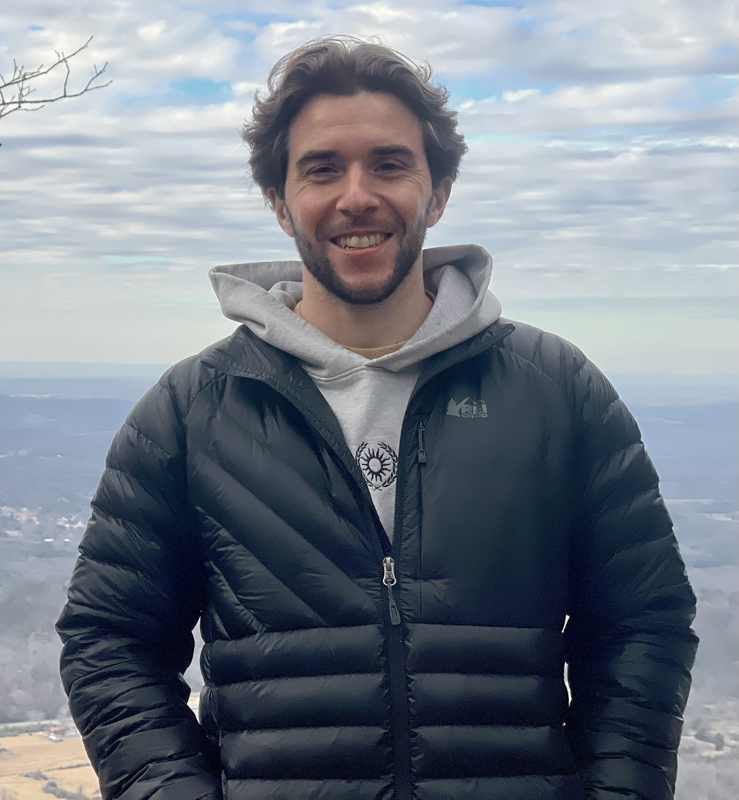

About Jared

I have a passion for holistic health and well-being with an affinity towards the esoteric. From my years of study it has been fascinating to see how these two categories have overlapped and are intertwined.
Having worked in the hospital setting for over 8 years both as an RN and nurse aid, I have managed to get an inside look on the state of our modern healthcare system. I have seen beauty in the wonders it has been able to provide for people in emergency and life-threatening situations, but have also seen the shadow side that is the medical industrial complex in full effect.
Making changes in my own life with regards to health, wellness and developing a true inner relationship with myself, I began to see just how far our current understanding and cultivation of true health in the individual and the collective had steered off course.
I strive to live a balanced, embodied and holistic life. It wasn't until I got back to the basic foundations and had the courage to look at the things I had spent my whole life trying to avoid that I was able to really discover who I was and what I needed in order to live the happiest, healthiest, most whole life I knew I was always capable of living.
I aim to become the most individuated version of myself in this lifetime, and hopefully can inspire others to do the same. My dream is to look back on my life on my final day in this realm and have the felt sense that I had given absolutely everything that I had to offer to this life.
I believe that we have the responsibility and duty to leave this world a better place for all living beings, now and in the future, in whatever way we are able to contribute to that. This website, along with the offers that are presented here, serve as my first attempts to fulfill my duty and will be the first of many projects to come.
Thank you for doing your part as well!
I'd love to connect with you!
If something here resonated, don't sit with it — reach out. Whether you're ready to begin or just have a question, I read every message and I'll meet you honestly, right where you are.
- Email jaredmkrupp@gmail.com
- Instagram @jared_krupp